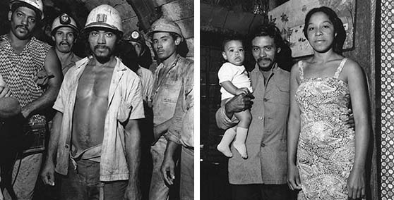

Inspired by Milton's Photography
Poetry by Nancy Morejón
Cuba, 1981-1990
Mujeres Nuevas
La flecha ecuatorial
perdida aún bajo los párpados.
Flores silvestres en el pecho,
quemadas por todos los salitres del mundo.
El trino del gallo en la montaña.
El silbido del humo en la ciudad.
Y sus manos, que vienen de muy lejos,
desde remotas eras,
amasando la sustancia reciente
que nos hace vivir
entre el mar y las costas,
entre los peces y las redes,
entre las ventanas y el horizonte.
Estas mujeres van alzando,
marchando,
cosiendo,
martillando,
tejiendo,
sembrando,
limpiando,
conquistando,
leyendo,
amando.
Oh, simples mujeres nuevas
simples mujeres negras
dando el aliento vivo
de una luz nueva
para todos.
New Women
The equator's arrow
lost even beneath their eyelids.
At their breast, wild flowers
burned by all the saltpeter in the world.
The crowing of the rooster in the mountain.
The whistle of smoke in the city.
And their hands, that come from so far away,
from by-gone times,
kneading together the yeasty substance
that makes us live
between the sea and the shores,
between fishes and nets,
between windows and the horizon.
These women go on rising,
marching,
sewing,
hammering,
knitting,
sowing,
cleaning,
conquering,
reading,
loving.
Oh, upright new women,
upright black women,
bringing the blessed breath
of a new light
for us all.
Cuba, 1981-1990
Patria
Este sillón enlaza en sus adentros
los dulces aires del violín
y los compases de la cajita china,
en fin, la melodía del danzón
en los atardeceres de domingo.
El perfume de Brindis de Salas
iba flotando también en la manigua
temblando como el corazón de la patria.
Homeland
Deep down, this rocking chair brings together
the sweet airs of the violin
and the drumming of the little chinese box,
all in all, the melody of the danzon
on late Sunday afternoons.
The fragrance of Brindis de Salas’ music
floated on that jungle, too,
trembling like the heart of my homeland.
From the photo series Family of Miners, 1981-1990, Cuba
Elogio de la Danza
Para Leo Brouwer
El viento sopla
como un niño
y los aires jadean
en la selva, en el mar.
Entras y sales
con el viento,
soplas la llama fría:
Velos de luna
soplas tú
y las flores y el musgo
van latiendo en el viento.
Y el cuerpo
al filo del agua,
al filo del viento,
en el eterno signo de la danza.
In Praise of Dance
For Leo Brouwer
The wind blows
like a child
and the breezes pant
on the jungle, on the sea.
You enter and leave
with the wind,
you blow on the cold flame:
You blow on
the veils of the moon,
and the flowers and the moss
are flapping in the wind.
And the body
at the edge of the storm,
at the edge of the wind,
in the eternal symbol of the dance.
 From the photo series Family of Miners, 1981-1990, Cuba
En Moa
Intentando escribir el último poema para
los mineros de Moa
Que retrató el lente de mi amigo Milton Rogovin.
¿Qué luz esperan estos mineros,
estos rostros de los mineros
que sacan la luz de las entrañas
de un pueblo extraño y rojo y polvoriento
que, alguna vez, nombraron Moa?
Necesitamos esa luz
más que nunca
cuando se acaba este siglo
que transpira sangre,
y es casi una dama sofisticada
que pudo visitar las estrellas.
En Moa
también se está acabando el siglo
pero no el esplendor de la luz
esparcida en los ojos de los mineros,
del minero con una criatura en brazos
cuya existencia no conocerá
el fragor de las balas de la Sierra Cristal
pero sí el canto de los gallos
en la mañana.
Los mineros seguirán buscando esa luz oculta en la tierra de Moa.
Y detendrán la muerte.
Fueron estos mineros
los que escucharon mi triste canción.
In Moa
Trying to Write the Last Poem for the Miners of Moa
Whose Portraits Were Taken by the Lens of My Friend Milton Rogovin
What light can these miners hope for,
these faces of miners
who extricate light from the entrails
of a strange red dustbedeviled village
that someone once decided to call Moa?
We need this light
now more than ever
at the end of a century
that lives and breathes blood
and that almost became a sophisticated lady
who might have visited the stars.
In Moa
too, the century is ending,
but not the radiance of the light
glittering in the eyes of miners,
of the miner holding in his arms a babe
whose life will never know
the clamor of bullets in the Sierra Cristal,
but who instead will hear the crowing cock
at break of day.
The miners will still search for that light hidden in the land of Moa.
And they will stop death.
These were the very miners
who listened to the sadness of my song.